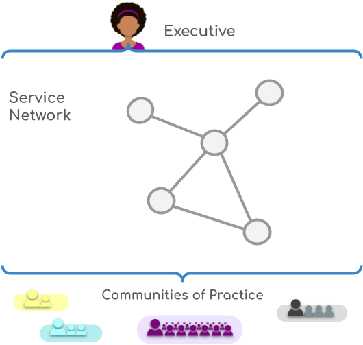

Welcome to the PINS D&D Service Model User Guide
Welcome to the Planning Inspectorate's (PINS) Data & Digital Service Model User Guide.
This guide will become a key resource for:
- Service managers - looking for information about setting up and running their service teams.
- Service team members - looking to understand their role adn the broader responsibilities and support available to them.
- Members of the Office of the Cheif Digital and Information Officer (OCDIO) - looking to understand processes and repsonsibilities as representatives of Rachel Graham, CDIO.
- Customers/PINS colleagues - looking for an in-depth understanding of the PINS D&D Service Model and demand management processes.
The service model we are adopting in PINS D&D is based on Stance's Organised Services Operating Model (OSOM) but also draws from best practice across government and industry; and is being adapted to work for PINS, putting the "people" in PINS at its heart.
The contents of this guide are largely taken from Stance's OSOM guide as a starting point, but this will evolve as we tailor the model to PINS' requirements. We welcome your thoughts and feedback to develop this.
Introduction to OSOM
The Organised Services Operating Model (OSOM) is a template operating model to help organisations adopt a service-based approach. This is in opposition to a functional model, where capabilities are grouped by skills and ownership of the delivery to users is an endeavour shared between those functions.
The operating model has evolved by encouraging a common set of good behaviours at multiple organisations and discovering an organisational design and supporting processes that occur as a consequence.
The key components of OSOM are an executive capability that provides oversight & governance and a network of services that progress through a simple service lifecycle compatible with the Government Digital Service's service manual.
A template operating model
OSOM is a template operating model. Each organisation is different, and few organisations would be directly mappable onto OSOM directly. Instead, it forms a general approach that should be carefully adapted as needed to the organisation.
The key to adapting an operating model for any organisation is to be aware of the trade-offs being made with each compromise, both positive and negative. That way, governance can be established to balance the negative consequences, and full advantage can be taken of positive consequences.
Elements of OSOM
The executive
The OSOM executive governs the network of services and holds the managers of those services to account through various mechanisms documented in terms of reference.
The executive also has a role in advocating and monitoring the adoption of guides to better decisions throughout the organisation, which provides a collection of 40 universally useful patterns of behaviour that should be encouraged wherever possible.
The service network
OSOM services address the needs of users. For any given service, the users may be external to the organisation, internal, or a mixture of both.
Each service is built & operated by a Service Manager, who is accountable for the service and the team required in all its lifecycle phases - from discovery until its eventual retirement.